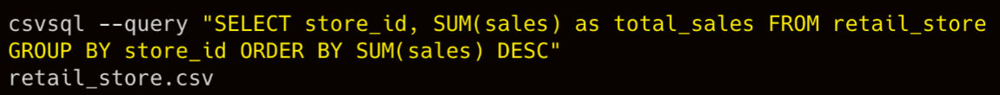

Big Data
Misc
RcppArmadillo::fastLmPureNot sure what this does but it’s rcpp so maybe faster than lm for big data..lm.fitis a base R lm function that is 30%-40% faster than lm.
High Performance
{rpolars}: arrow product; uses SIMD which is a low-level vectorization that can be used to speed up simple operations like addition, subtraction, division, and multiplication
- Resources
- Also see collapse >> vs arrow/polars
{collapse}: Fast grouped & weighted statistical computations, time series and panel data transformations, list-processing, data manipulation functions, summary statistics and various utilities such as support for variable labels. Class-agnostic framework designed to work with vectors, matrices, data frames, lists and related classes i.e. xts, data.table, tibble, pdata.frame, sf.
options(collapse_mask = "all") library(collapse)- Code chunk above can optimize any script. No other changes necessary. Quick demo.
- vs arrow/polars (benchmark)
- Depends on the data/groups ratio
- If you have “many groups and little data in each group” then use collapse
- If your calculations involve “more complex statistics algorithms like the median (involving selection) or mode or distinct value count (involving hashing)(cannot, to my knowledge, benefit from SIMD)” then use collapse.
- Depends on the data/groups ratio
{r2c}: Fast grouped statistical computation; currently limited to a few functions, sometimes faster than {collapse}
{data.table}: Enhanced data frame class with concise data manipulation framework offering powerful aggregation, extremely flexible split-apply-combine computing, reshaping, joins, rolling statistics, set operations on tables, fast csv read/write, and various utilities such as transposition of data.
{matrixStats}: Efficient row-and column-wise (weighted) statistics on matrices and vectors, including computations on subsets of rows and columns.
{kit}: Fast vectorized and nested switches, some parallel (row-wise) statistics, and some utilities such as efficient partial sorting and unique values.
{fst}: A compressed data file format that is very fast to read and write. Full random access in both rows and columns allows reading subsets from a ‘.fst’ file.
Larger than Memory
Only work with a sample of the data
- Random sample in CLI
- See binder for code
- Only read the first n lines
- set n_max arg in readr::read_*
- Random sample in CLI
datasette.io - App for exploring and publishing data. It helps people take data of any shape, analyze and explore it, and publish it as an interactive website and accompanying API.
- Well documented, many plugins
Rill - A tool for effortlessly transforming data sets into powerful, opinionated dashboards using SQL.
- Docs, Example Projects
- Powered by Sveltekit & DuckDB = conversation-fast, not wait-ten-seconds-for-result-set fast
- Works with your local and remote datasets – imports and exports Parquet and CSV (s3, gcs, https, local)
- No more data analysis “side-quests” – helps you build intuition about your dataset through automatic profiling
- No “run query” button required – responds to each keystroke by re-profiling the resulting dataset
- Radically simple interactive dashboards – thoughtful, opinionated, interactive dashboard defaults to help you quickly derive insights from your data
- Dashboards as code – each step from data to dashboard has versioning, Git sharing, and easy project rehydration
Online duckdb shell for parquet files (gist, https://shell.duckdb.org/)
select max(wind) from 'https://raw.githubusercontent.com/RobinL/iris_parquet/main/gridwatch/gridwatch_2023-01-08.parquet'; -- Takes 6 seconds on the first query, 200ms on subsequent similar queries select * from 'https://raw.githubusercontent.com/RobinL/iris_parquet/main/NSPL/NSPL.parquet' where pcd = 'SW1A1AA'; -- Takes 13 seconds on the first query, 100ms on subsequent similar queriesCSV Editors
For editing or reformatting cells
Popular spreadsheet programs like googlesheets (100MB) and excel (25MB online) have file size limits and they’re slow to upload to. The following programs are free(-ish) local alternatives only limited by your RAM.
Suggest for files over a few hundred MBs that you open as Read-Only
- Opening the files as “Editable” will probably balloon the memory cost to at least 5 times the file size. (e.g. 350MB csv \(\rightarrow\) 2GB RAM)
Modern CSV - Nice modern interface, read-only mode that can open large csvs (100s of MBs) without making much of a dent in your RAM, fully featured (moreso if you pay a small-ish one time fee)
OpenRefine - Has read-only, Several add-ons, Completely open source.
- Docs, List of Extensions
- No functionality when read-only (must create a project to do anything) — just reading
- Starts with a 1024 MB RAM usage limit which is proably fine for editing around a 100MB csv. Need to set the limit higher in a config file in order to edit larger files.
- Once you create a project, I think it has some editing features that you’d have to pay for with Modern CV.
- Opens other file formats besides csv (e.g. xlsx, xml, json, etc)
csvkit - suite of command-line tools for converting to and working with CSV
Installation docs
Notes from
- Article with additional examples and options
Features
- Print CSV files out nicely formatted
- Cut out specific columns
- Get statistical information about columns
Convert excel files to CSV files:
in2csv excel_file.xlsx > new_file.csv # +remove .xlsx file in2csv excel_file.xlsx > new_file.csv && rm excel_fileSearch within columns with regular expressions:
csvgrep -c county -m "HOLT" new_file.csv # subset of columns (might be faster) with pretty formatting csvcut -c county,total_cost new_file.csv | csvgrep -c county -m "HOLT" | csvlook- Searches for “HOLT” in the “county” column
Query with SQL
- syntax
csvsql --query "ENTER YOUR SQL QUERY HERE" FILE_NAME.csv - Example

- syntax
View top lines:
head new_file.csvView columns names:
csvcut -n new_file.csvSelect specific columns:
csvcut -c county,total_cost,ship_date new_file.csv- With pretty output:
csvcut -c county,total_cost,ship_date new_file.csv | csvlook - Can also use column indexes instead of names
- With pretty output:
Join 2 files:
csvjoin -c cf data1.csv data2.csv > joined.csv- “cf” is the common column between the 2 files
EDA-type stats:
csvstat new_file.csv # subset of columns csvcut -c total_cost,ship_date new_file.csv | csvstat
JSONata - a lightweight, open-source query and transformation language for JSON data, inspired by the ‘location path’ semantics of XPath 3.1.
- Misc
- Notes from: Hrbrmstr’s article
- JSONata also doesn’t throw errors for non-existing data in the input document. If during the navigation of the location path, a field is not found, then the expression returns nothing.
- This can be beneficial in certain scenarios where the structure of the input JSON can vary and doesn’t always contain the same fields.
- Treats single values and arrays containing a single value as equivalent
- Both JSONata and jq can work in the browser (JSONata embedding code, demo), but jq has a slight speed edge thanks to WASM. However, said edge comes at the cost of a slow-first-start
- Features
- Declarative syntax that is pretty easy to read and write, which allows us to focus on the desired output rather than the procedural steps required to achieve it
- Built-in operators and functions for manipulating and combining data, making it easier to perform complex transformations without writing custom code in a traditional programming language like python or javascript
- User-defined functions that let us extend JSONata’s capabilities and tailor it to our specific needs
- Flexible output structure that lets us format query results into pretty much any output type
- Misc
jq + jsonlite - json files
jsoncrack.com - online editor/tool to visualize nested json (or regular json)
jj - cli tool for nested json. Full support for ndjson as well as setting/updating/deleting values. Plus it lets you perform similar pretty/ugly printing that jq does.
sqlite3 - CLI utility allows the user to manually enter and execute SQL statements against an SQLite database or against a ZIP archive.
- also directly against csv files (post)
textql - Execute SQL against structured text like CSV or TSV
- Require Go language installed
- Only for Macs or running a docker image
columnq-cli - sql query json, csv, parquet, arrow, and more
fread + CLI tools
{arrow}
- convert file into parquet files
- pass the file path to
open_dataset, usegroup_byto partition the Dataset into manageable chunks - use
write_datasetto write each chunk to a separate Parquet file—all without needing to read the full CSV file into R
- pass the file path to
- dplyr support
- convert file into parquet files
-
- Option for data > 10M rows and you only have access to one machine
- Spreads data over local cores
{sparklyr}
- spin up a spark cluster
- dplyr support
- Set-up a cloud bucket and load data into it. Then, read into a local spark cluster. Process data.
{h2o}
h2o.import_file(path=path)holds data in the h2o cluster and not in memory
{disk.frame}
- supports many dplyr verbs
- supports future package to take advantage of multi-core CPUs but single machine focused
- state-of-the-art data storage techniques such as fast data compression, and random access to rows and columns provided by the fst package to provide superior data manipulation speeds
Matrix ops
- see bkmks: mathematics >> packages
{ff}
- see bkmks: data >> loading/saving/memory
- Think it converts files to a ff file type, then you load them and use
ffapplyto perform row and column operations with base R functions and expressions - may not handle character and factor types but may work with {bit} pkg to solve this
Viz
- Scatter plots
- {scattermore}, {ggpointdensity}
- {ggrastr}
- H2O
h2o.aggregatorReduces data size to a representive sample, then you can visualize a clustering-based method for reducing a numerical/categorical dataset into a dataset with fewer rows A count column is added to show how many rows is represented by the exemplar row (I think)- Aggregator maintains outliers as outliers but lumps together dense clusters into exemplars with an attached count column showing the member points.
- For cat vars:
- Accumulate the category frequencies.
- For the top 1,000 or fewer categories (by frequency), generate dummy variables (called one-hot encoding by ML people, called dummy coding by statisticians).
- Calculate the first eigenvector of the covariance matrix of these dummy variables.
- Replace the row values on the categorical column with the value from the eigenvector corresponding to the dummy values.
- docs; article
- {dbplot}
- plots data that are in databases
- Also able to plot data within a spark cluster
- docs
- plots data that are in databases
- ObservableHQ
- {{{deepscatter}}}
- Thread (using Arrow, duckdb)
- {{{deepscatter}}}